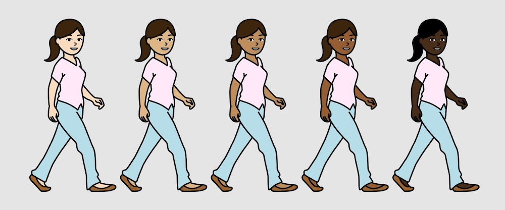

THE PROBLEM
Children struggled to represent themselves and their families in their projects because of the limited selection of colors and characters they were able to use.
Making ScratchJr, a creative block coding app for younger children, more inclusive and accessible.
ScratchJr is a creative coding app meant to be developmentally friendly to children under the age. After many years of occasional maintenance but no dedicated team, we have recently formed a small group to work on updating and maintaining ScratchJr.
As the designer on the ScratchJr team, I have been helping define the trajectory for our work to address the many requests and feature fixes that have accumulated over the years. Updating the characters to have more representative skin tones, overseeing the creation of new characters, and contributing to planning the work to put ScratchJr on the web are a few of my favorite and most impactful projects I have been working on for ScratchJr.
In ScratchJr, children are limited to using a set selection of colors for changing the characters that they use in their projects. Over the years, many educators, researchers, and parents have pointed out the distinct lack of brown skin tones in the color palette.
I worked with another designer to create a set of six new skin tones to add to the ScratchJr color palette. We based our work off of the existing Bring Yourself into Scratch project, which had added more diverse and representative sprites to the main Scratch platform. The changes were added to the ScratchJr app at the start of 2022.
The old color palette:
Exploring different hues and shades of brown:
The new color palette:
After defining a new set of colors, I also worked on addressing the problems around changing a character's skin color and lack of representation in our set of people characters.
Previously, changing the skin color of a character -- especially to a darker tone -- made the character look unnatural.
Old character library:
Changing skin colors:
In addition, researchers observing children using ScratchJr discovered children were more likely to use the teen characters rather than the adult characters to represent their parents because all of the adult characters were white-presenting and didn't look like their family.
As a result, we made the following changes:
1. Changed all of the character outlines to black so that their outlines remained a neutral color that would compliment any changes, and made their skin tones the ones from our new palette. We also added whites to their eyes to try to ensure facial features remained visible regardless of skin tone.
2. Changed the size of all the teens to match the height of the adults, and renamed everybody "person" instead of "Mom", "Teen", etc. so that children had a wider selection of adult-like characters.
Seeing it in action!
Because the only baby available was white-presenting, I modified it to add two new baby characters and provide a wider selection of babies. Below are my explorations, reference photos, and the final product. I also went through multiple rounds of feedback with the DevTech and Creative Communities research groups, both who work closely with children using ScratchJr.
Experimentation:
Finalized baby characters:
These changes were the first steps to improving our character library. We will be continuing to change, add, and modify characters for better representation of the many cultures and people using ScratchJr.
In addition to adding new characters, I have been designing small fixes for features such as adding an import button to make it easier for teachers and students to import projects into the app.

As chromebooks have become more prevalent in classrooms, more and more teachers have been requesting a web version of ScratchJr that their students can use more easily. We have begun working on this project and are in the process of releasing our first alpha prototype. To support this work, I have been documenting the assets and interactions in the current app to guide our decision-making and designing.